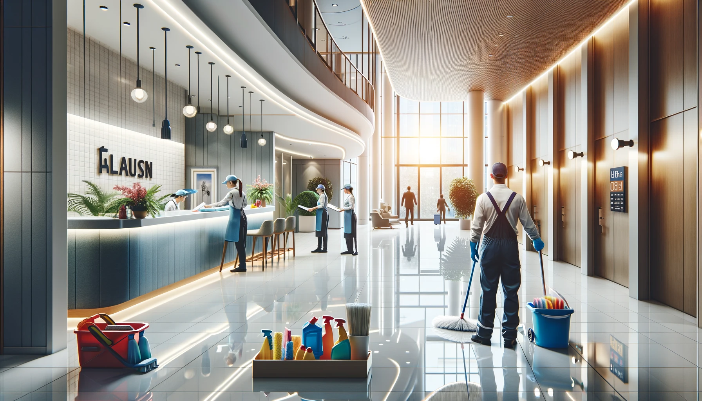

ÉclatNet est une entreprise spécialisée dans l'entretien des immeubles à Paris et en Île-de-France. Nous offrons des services de nettoyage professionnel pour les immeubles de copropriété, garantissant des espaces communs impeccables et bien entretenus. Notre équipe de spécialistes mobiles assure les sorties et rentrées des poubelles 6 jours sur 7 (7 jours sur 7 en option), et nous intervenons également dans les bureaux, les espaces de co-working et bien plus encore.
Notre mission est d'offrir des services de nettoyage exceptionnels tout en respectant des pratiques écologiques et durables. Nous nous engageons à fournir des solutions de nettoyage qui dépassent les attentes de nos clients, en veillant à la propreté et à la santé des espaces partagés.
Nos services incluent également le nettoyage de cours avec machine de haute pression, décapages de locaux de poubelles, et décapages et lustrages des halls d'entrée.